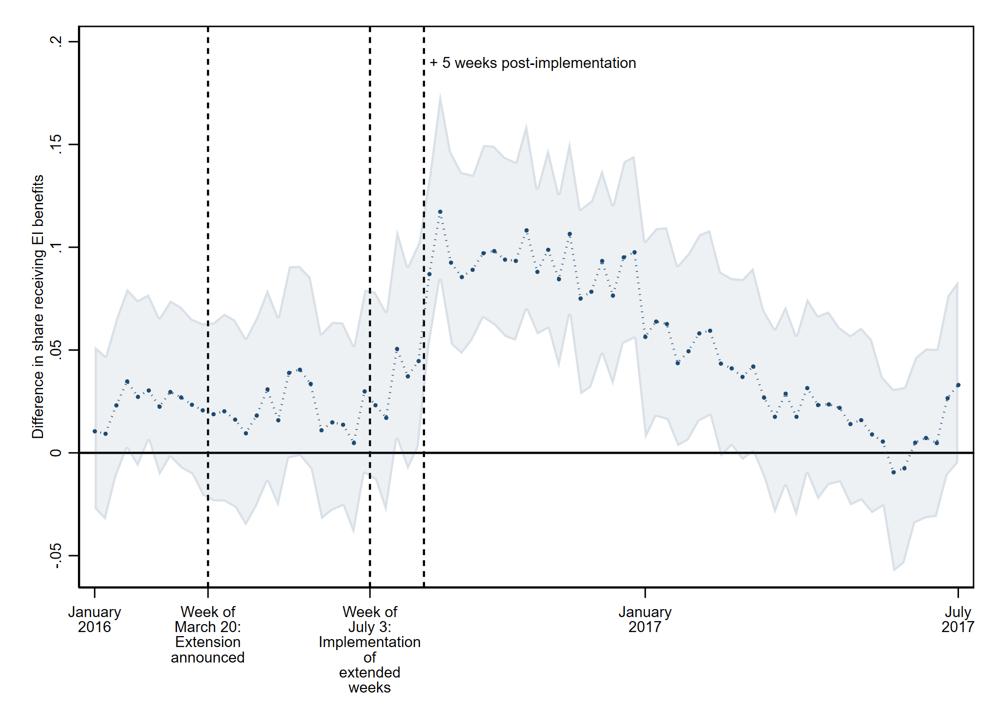
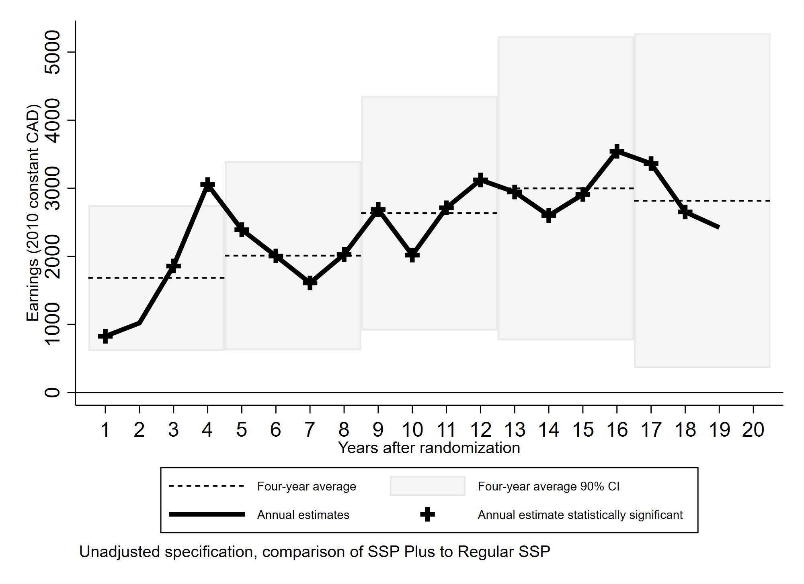
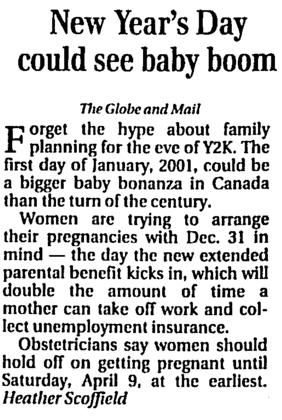
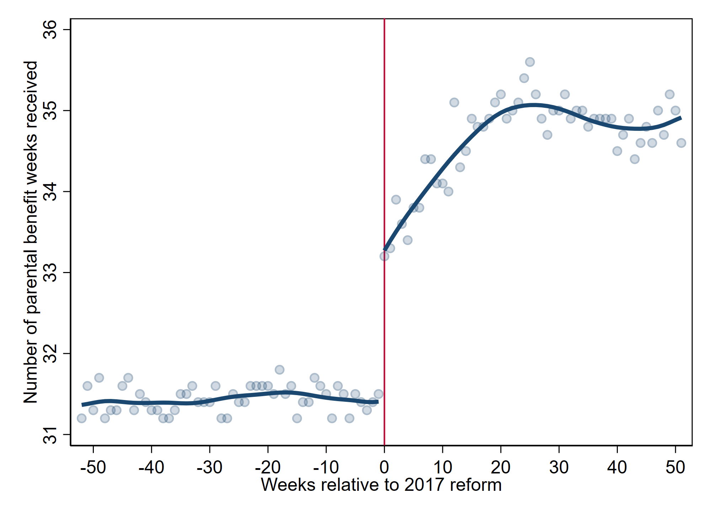

Working Papers

Abstract: Do more generous unemployment benefits help workers find better jobs? Using a fuzzy regression discontinuity and administrative data, I study a temporary UI benefit extension introduced during a downturn triggered by a global oil price shock. I find that additional weeks of benefit entitlement significantly increase re-employment earnings, raise the probability of returning to the same industry, reduce entry into self-employment, and boost both before- and after-tax income as well as government tax revenues.
Joint work with Gustavo Bobonis, Aneta Bonikowska, Philip Oreopoulos, and W. Craig Riddell.
Conditionally accepted at American Economic Journal: Applied.

Abstract: We study the medium- and long-run impacts of the Canada Self-Sufficiency Project (SSP) Plus program, which randomly offered intensive employment support services for up to three years to long-term welfare recipients eligible for temporary earnings subsidies. We examine whether this intervention—designed to address both economic and psychosocial barriers to finding and retaining desirable employment—produced long-run changes in individuals' socioeconomic trajectories. We link study participants to their federal tax and employer-employee matched records for up to 20 years following random assignment. The intensive services treatment resulted in a 20–27 percent increase in participants' annual earnings over the 20-year period and sustained increases in full-time employment during the first decade post-intervention. As potential mechanisms, treated individuals engaged in more job search and job-to-job transitions and secured employment in higher-wage jobs and at higher-paying firms.
Joint work with Jeffrey Hicks and Hugh Shiplett.
View on SSRN
Abstract: Canada doubled paid and protected parental leave for parents of children born after December 30th, 2000, creating an eligibility cutoff that has been widely used as a quasi-experiment. We study fertility dynamics around this reform using new administrative data. The policy was announced 14 months in advance, allowing families to delay fertility. Consistent with this, we document an immediate reduction in conceptions after the announcement: in the latter half of 2000, births among benefit-eligible mothers were 8% lower than a predicted counterfactual, followed by a relative boom after implementation. Fertility responses were strongest near the cutoff, exhibiting a 25%-30% discontinuity in births among benefit claimants. Placebo checks support a causal interpretation. Timing responses were strongest among high-income mothers and higher-order births, where the discontinuity in births was up to 47%, consistent with financial incentives and salience. These patterns underscore the sensitivity of fertility timing to financial incentives and have implications for research that assumes no such responsiveness.
Work in Progress

Abstract: Work in progress. This study evaluates how the 2017 introduction of an extended parental leave option in Canada affects family behaviour and labour market outcomes. The reform allowed parents to extend leave duration by accepting lower weekly benefits. Preliminary results suggest that the policy increased leave durations and shifted the timing of labour market re-entry, with implications for caregiving allocation within households.